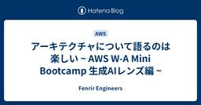

Fenrir Engineers
https://engineers.fenrir-inc.com/
Fenrir Engineers
フィード

アーキテクチャについて語るのは楽しい ~ AWS W-A Mini Bootcamp 生成AIレンズ編 ~
Fenrir Engineers
開発技術部の柴田です。 先日、AWS Ambassadors / Top Engineers限定で開催されたワークショップ「AWS W-A Mini Bootcamp 生成AIレンズ編」に参加しました。 生成AIを利用したアプリケーションがPoCのフェーズから、サービス提供のフェーズに移っていく中で新しい壁を感じている方もいるのではないでしょうか。 このBootcampでは、そういった生成AIを利用したアプリケーションを運用する上での課題を「具体的なリスク」として炙り出し、乗り越えていくためのヒントを得ることができました。 AWS Well-Architected Frameworkとは ご存…
2日前

Webエンジニアなら知っておきたいRAG
Fenrir Engineers
はじめに こんにちは。クラウドネイティブ技術部の佐久間 拓志です 。 今、世界中で「生成AI」が大きな注目を集めています。ChatGPTやGoogle Gemini、Claudeといった大規模言語モデル（LLM）の登場により、私たちの業務効率は飛躍的に向上する可能性を秘めています 。 しかしLLMは、ある特定の分野の詳しい知識や、比較的新しい知識といった、学習データに含まれていない情報を扱うことが難しいという問題を抱えています。 これらの問題を解決する鍵として、RAG（Retrieval-Augmented Generation：検索拡張生成）という技術アプローチがあります 。 この記事では、…
8日前
AIが自律的にタスク実行！Amazon Bedrock Agent + Lambdaで作るアーキテクチャ
Fenrir Engineers
こんにちは、クラウドエンジニアの三﨑・長谷部です。 今回は生成AIの話題に触れながら、「Amazon Bedrock Agent + Lambda」で構成する、Lambdaと連携可能なAIアーキテクチャについて紹介します。 生成AIとただ会話するだけでなく、外部のAPIと連携してリアルタイムの情報を取得することで、その可能性は大きく広がります。 以前の記事では、Function Callingを用いてAIが外部機能を呼び出す仕組みを紹介しましたが、今回はその進化版である Amazon Bedrock Agentを活用し、AIが自動的にLambdaを実行して結果を返す構成を紹介します。 アーキテ…
19日前
iOSDC 2025に参加してきました！
Fenrir Engineers
9/19〜9/21のiOSDC Japan 2025に現地で参加させていただきました！ 本記事では特に印象に残ったセッションについて、聴講メモを元にダイジェストでご紹介します。 iOSDC Japan 2025について Day0：注目の技術と新たなアプローチ AccessorySetupKitで実現するシームレスなペアリング体験 空間再現力の鍵、APMPを読み解く Day1：パフォーマンス、設計 ハイパフォーマンスなGIFアニメ再生を実現する工夫 「Chatwork」アプリにおけるSVVS実装戦略 iOSアプリのバックグラウンド制限を突破してアップロードを継続する道のり ABEMAモバイルアプ…
19日前
Webエンジニアなら知っておきたい日時の扱い
Fenrir Engineers
はじめに コンピューターにおける日付の扱い方 UTC（協定世界時） UNIX時間 各言語における日付型 基準の時計 日付の受け渡し 曖昧な表現の危険性 RFC 3339 時差・タイムゾーンの扱い方 変換の責任を明確にする 夏時間（DST）への対応 日付のみの扱い 日時の範囲の扱い方 閉区間と開区間 NULL や特殊値の扱い NULL を使う場合 精度と区間の関係 おわりに 参考文献 はじめに こんにちは、フロントエンド担当の曽我です。 システム開発において「日時の扱い」は、ほぼすべての領域で登場するテーマです。 ユーザーへの情報表示、バックエンド処理、データベースへの記録、サービス間の連携など…
2ヶ月前
Kiroで始めるPoC開発から学んだ初心者向けノウハウ
Fenrir Engineers
開発技術部の柴田です。 皆さんはKiroを使っていますか？ kiro.dev 私はパブリックプレビュー初期から登録していましたが、本格的に使い始めたのは2025年9月になってからです。 そこから約1か月、試行錯誤しながら開発を進めてみた結果、「Kiroとどう付き合えば開発がうまく進むのか」が少し見えてきました。 本記事では、その経験をもとに初心者向けのノウハウを紹介します。 ※ 本記事の内容は2025年9月〜2025年10月時点のKiroを元にしています。機能・料金体系は変更される可能性があります。 ※ 筆者はAIアシスト開発を常に行っているわけではないためアンチパターンが含まれている可能性も…
2ヶ月前
Webエンジニアなら知っておきたいIDaaS
Fenrir Engineers
はじめに IDaaSとは 従来の認証基盤の構成例 IDaaSへの置き換え IDaaS利用にあたっての注意点 サービス選定 セキュリティ データ移行 まとめ 参考 はじめに こんにちは、クラウドネイティブ技術部の平田です。 昨今、ほとんどのWebアプリケーションにおいて認証・認可の機能は必須となっています。 これらの機能を提供する認証基盤は、セキュリティなどの観点からシステム上非常に重要です。 認証基盤の実装に脆弱性があると、個人情報漏洩などの重大なセキュリティインシデントに繋がる可能性があります。 しかし、認証・認可はアプリケーションが本来提供したい価値そのものではありません。開発者としては、…
3ヶ月前
Google Cloud Next Tokyo ‘25で得たもの〜ワークショップ&Expo編〜
Fenrir Engineers
はじめに こんにちは！ NILTOチームでインフラエンジニアをしている太田です。 2025年8月5日（火曜日）と6日（水曜日）の2日間、東京ビッグサイトにて開催された、Google Cloud Next Tokyo '25に参加してきました。 会場では、カテゴリごとに分かれた多数のセッションが聴講できるほか、Expoでの展示ブース、認定資格者ラウンジといったコミュニケーションのスペースなど、さまざまな催しものが楽しめました。 本記事では、太田が受けたスペシャルセッションと、Expoを周った時の様子についてレポートします。Expoについては、GIMLEチームの若林さんと一緒に回ったので、そのよう…
3ヶ月前
Google Cloud Next Tokyo ‘25で得たもの〜セッション編〜
Fenrir Engineers
はじめに 注意点 サービスメッシュは複雑だ Cloud RunとCloud Service Meshで変わる開発・運用 サービス間の通信方法が簡素になる Cloud Traceの自動連携 このセッションを聞いて得たもの おわりに はじめに こんにちは！ NILTOチームでインフラエンジニアをしている太田です。 2025年8月5日（火曜日）と6日（水曜日）の2日間、東京ビッグサイトにて開催された、Google Cloud Next Tokyo '25に参加してきました。 会場では、カテゴリごとに分かれた多数のセッションが聴講できるほか、Expoでの展示ブース、認定資格者ラウンジといったコミュニケ…
3ヶ月前
CloudFormationをVSCode DevContainersで便利に書こう
Fenrir Engineers
こんにちは。インフラ担当の森井康平です。 VSCode DevContainersを使用してCloudFormation用のローカル環境を整えてみたところ、割と使いやすかったので共有したいと思います。 VSCode DevContainersとは VSCode DevContainersは、コンテナの中でVSCode Serverを実行できる機能です。 プロジェクトに必要なすべてのツールやライブラリなどを含んだ開発環境をコンテナとして定義し、このコンテナに接続してコード編集やデバッグなどの開発作業を行うことができます。 DevContainersのアーキテクチャ Developing insi…
3ヶ月前
オブザーバビリティについて
Fenrir Engineers
オブザーバビリティとは 日々の開発や保守の中で、みなさんはインフラ監視ツール等を使って、サーバーやネットワークの状態をモニタリングしているかと思います。 CPU使用率やメモリ消費量、死活監視のアラートを頼りに安定稼働を守ってきたはずです。 しかし、こんな経験はありませんか？ アラートは鳴ったけど、どこで問題が起こっているのかが分からない 大量のログを追ってみても、どのサービスが遅延の原因なのか特定できない 再起動したら直ったけど、結局何が起きたのか謎のまま 従来のインフラ監視ツールは、あくまで異常を検知することが中心でした。 近年はシステム開発や構築を早めるためにアーキテクチャが複雑化し、マイ…
3ヶ月前
Web エンジニアなら知っておきたいブラウザレンダリングの流れ
Fenrir Engineers
Web エンジニアの谷村です。最近の Web アプリケーションは、リッチな UI・機能とともに、サクサク操作できる UX = パフォーマンスが高いアプリケーションが求められていると思います。 パフォーマンスが高い = ユーザーが使いやすい・使ってくれるアプリケーションを実現していくためには、パフォーマンスチューニングは必須です。 実際の現場におけるパフォーマンスの課題は、個別具体性が高い場合が多く、課題に応じた解決手段を考えていく必要があると思います（API のレスポンス速度は問題ないが表示までが遅い・操作した時にもたついて感じる...etc）。 そういった課題を解決するために、まずは、そもそ…
5ヶ月前
検証用にAWS Organizationsを設定してIAM Identity Centerでログインできるようにしてみた
Fenrir Engineers
開発技術部の柴田です。 前回のAWS Ambassador Global Summitに参加した記事で少しふれたのですが、Global Summitに参加していよいよAmazon Q Developerをしっかり学ぶぞと心に決めました。 Amazon Q Developerは無料でも使えるのですが、どうせならその能力を余すことなく体験したい思い、Amazon Q Developer Proを使うことにしました。 さらに、この機会に前から興味があった自分専用の検証用AWS Organizationsを作成することにしました。 OrganizationsのメンバーアカウントでAmazon Q De…
5ヶ月前
AWS Ambassador Global Summit 2025参加レポート
Fenrir Engineers
開発技術部の柴田です。 2025年6月にシアトルで開催された「AWS Ambassador Global Summit」に参加してきました。 気づけば4回目の参加になります。過去の参加については以下をご覧ください。 engineers.fenrir-inc.com engineers.fenrir-inc.com engineers.fenrir-inc.com 例によってNDAがあるためあまり詳細は書けませんが、非常に良い経験を得ることができましたので、書ける範囲で紹介したいと思います。 AWS Ambassador Global Summitとは AWS Ambassador Global…
5ヶ月前
タグで停止対象を判別するECSの自動停止・起動をCloudFormationで作成してみた
Fenrir Engineers
こんにちは、インフラエンジニアの川島です。 ECSの自動停止・自動起動をCloudFormationで作成したので紹介したいと思います。 以前Auroraの自動停止・自動起動をCloudFormationで作成したブログをあげたのですが、実際に開発環境で実装したところむしろコストが増加してしまいました。 engineers.fenrir-inc.com 何が起きていたのか原因を探ってみると、Configのコストが跳ね上がっていると判明しました。 Configのコストがなぜ上がったのかと調べたところ下記の内容が原因でした。 Aurora停止中にECSのコンテナが起動していたこと タスクがヘルスチ…
5ヶ月前
Webエンジニアなら知っておきたいHTTP圧縮
Fenrir Engineers
インフラ担当の森井康平です。 「Web エンジニアなら知っておきたい」シリーズということで、今回は「HTTPの圧縮」について紹介します。 HTTP圧縮は古くからある技術ですが、今でもパフォマーンス改善やトラブルシューティングに役立ちます。 HTTP圧縮とは HTTP圧縮は、サーバーがレスポンスを圧縮し、クライアントがそれを伸長する仕組みで、主にWebサイトのパフォーマンス向上を目的として使用されます。通常、CDNやWebサーバーの設定によって簡単に導入できます。 HTTP圧縮を利用することでレスポンスのデータサイズを削減することができます。データサイズが小さくなることにより配信速度が向上し、サ…
6ヶ月前
Web エンジニアなら知っておきたいシステム開発におけるドキュメント
Fenrir Engineers
こんにちは、Web エンジニアの三浦です。「Web エンジニアなら知っておきたい」シリーズということで、今回は、エンジニアにとって避けては通れない存在である「ドキュメント」についてお話します。 そもそも、なぜ、私たちはドキュメントを書くのでしょうか。個人開発であれば、書くことは少ないかもしれません。しかし、仕事では書いているケースが多いと思います。 「お客さんが欲しいものは、動くシステムでしょ？ ドキュメントなんて、正直、無駄じゃない？」って思う人もいるかもしれません。しかし、システム開発で作成する多種多様なドキュメントと、それらのドキュメントが持つ目的を深く理解することで、必要となる理由も、…
6ヶ月前
生成AIに「機能追加」できる？Claude + AWSで実現する拡張可能な会話アーキテクチャ
Fenrir Engineers
こんにちは、クラウドエンジニアの長谷部・三﨑です。 今回は生成AIの話題に触れながら、「Bedrock + Function Calling + Lambda」で構成する拡張可能なAIアーキテクチャについて紹介します。 生成AIと会話するだけでなく、「外部の機能を追加して連携させる」ことで、その可能性は大きく広がります。 最近では、AWS Lambda MCP Server (Multi-Capability Prompting Server) のような、こうした連携をより高度に、そして効率的に行うための仕組みも登場し始めています。MCPの普及・発展によって、生成AIに機能を追加するための便利…
7ヶ月前
Edge AIの未来と自動車業界への影響
Fenrir Engineers
こんにちは。クラウドネイティブ技術部の野中です。 2025年3月12日から3月14日にかけて開催されている AISC2025 に現地で参加していました。 近年、AI技術の発展が加速する中で、クラウドベースのAI処理だけでなく、エッジデバイスでのAI処理、いわゆる「Edge AI」が注目を集めています。 本記事では、NXPのプレゼンテーションを基に、Edge AIの概念と自動車業界へ影響について記載いたします。 1. Edge AIとは？ Edge AIの利点 Edge AIとは、デバイス自体でAI処理を行う技術のことを指します。主なメリットは以下の通りです。 リアルタイム処理: インターネット…
7ヶ月前
Webエンジニアなら知っておきたいレンダリング方式4選
Fenrir Engineers
フロントエンドフレームワークにおいて2025年現在はTypeScriptで記述することが多いと思います。しかし、どんなウェブアプリケーションも最終的にはブラウザが解釈できる形、つまりHTML/CSS/JavaScriptをユーザーに届けていることになります。TypeScriptをブラウザが解釈できる形に変換し表示する手法について、Next.jsなどのフレームワークは、常に新しい方法を探求し、開発者に提案し続けてきました。 現在主流となっているのは以下の4つです。CSR（クライアント・サイド・レンダリング）SSR（サーバー・サイド・レンダリング）SSG（スタティック・サイト・ジェネレーション）I…
7ヶ月前
サーバーレスのウェブアプリケーションを構築する ハンズオンでハマった落とし穴と解決策
Fenrir Engineers
はじめに こんにちは、インフラ担当の清水です。 AWS Amplify を用いた構成を実際に試してみたかったため、公式のハンズオン『サーバーレスのウェブアプリケーションを構築する』に取り組んでみました。 この記事では、AWS Amplifyのハンズオンで私が実際に遭遇し、解決に苦労した点とその解決策を共有します。 同じように困っている方の助けになれば幸いです。 構成 AWS Lambda、Amazon API Gateway、AWS Amplify、Amazon DynamoDB、および Amazon Cognito を使用した構成となっております。 構成図 (AWS公式ハンズオンより引用) …
7ヶ月前
Lambdaのイベントソースマッピング(SQS)は、どのタイミングで関数を起動するのか調べてみた
Fenrir Engineers
はじめに SQSとLambdaを組み合わせて処理を実行する場合、イベントソースマッピングを設定することができます。 イベントソースマッピングには、イベントポーラーというコンピューティングユニットがあり、このイベントポーラーがSQSメッセージを取得します。イベントソースマッピングはLambda関数にメッセージを渡し、関数を起動します。 イベントソースマッピング内では、イベントポーラーと呼ばれるリソースが新しいメッセージをアクティブにポーリングし、関数を呼び出します。（AWS公式ドキュメントより） SQSキューにメッセージが入った後、Lambda関数はどのタイミングで起動するのだろうと疑問に思った…
8ヶ月前
Web エンジニアなら知っておきたいキャッシュの活用法
Fenrir Engineers
Web エンジニアの友村です。 「Web エンジニアなら知っておきたい」シリーズでということで、今回は「キャッシュの活用」について紹介します。 キャッシュとは？ Web 開発において、パフォーマンスはユーザー体験を大きく左右する重要な要素です。 ページの表示速度が遅いと、ユーザーはストレスを感じて離脱してしまい、最悪の場合はサービスを利用しなくなるかもしれません。 最高のプロダクトを作るために、いかに高速にコンテンツを提供できるかは重要なポイントになります。 そこで登場するのが キャッシュ（Cache） という技術です。 キャッシュとは、取得したデータを一時的に保存し、次回以降のアクセス時に再…
9ヶ月前
タグで停止対象を判別するAuroraの自動停止・起動をCloudFormationで作成してみた
Fenrir Engineers
こんにちは、インフラエンジニアの川島です。 Auroraの自動停止・自動起動をCloudFormationで作成したので紹介したいと思います。 AWSでコスト削減をしようとすると目に付くのはやはりAuroraだと思います。 Auroraは起動している間、料金が発生し続け、EC2と比べてもとても高いです。 開発環境では常時起動は必要ないため一時停止しようとしても、手動では最大でも７日間しか停止することは出来ず、停止したと思ってたのにいつの間にか起動して料金がすごい事になっていた、なんてこともよくあることと思います。 Amazon Aurora DB クラスターの停止と開始 - Amazon Au…
9ヶ月前
Webエンジニアなら知っておきたいIaC
Fenrir Engineers
インフラ担当の川島です。 「Webエンジニアなら知っておきたい」ということで、今回は「Infrastructure as Code (IaC)」 について紹介いたします。 本ブログではIaCの中でも特にクラウド環境を構成するためのIaCについて紹介いたします。 IaCとは IaCとは、手動のプロセスや設定の代わりに、コードを使用してインフラストラクチャの管理とプロビジョニングを行うことを言います。インフラの構成や設定をコード化するため、手動設定によるエラーを減らし、一貫性を確保できます。 またコードで管理することにより、バージョン管理のしやすさや再現性が向上し、インフラの変更や展開がより迅速か…
10ヶ月前
2024年のDeepRacer月間リーグに出場しました
Fenrir Engineers
はじめに こんにちは。GIMLEチームの三﨑です。 今更ですが、今年の4月と5月に参加したDeepRacarの月次リーグについてまとめていこうと思います。 DeepRacer とは DeepRacerとはどのようなサービスでしょうか。 公式ドキュメントの説明を引用します。 AWS DeepRacer は、「強化学習」によって駆動される完全自律型の 1/18 スケールのレースカーです。これは次のコンポーネントで構成されます。 AWS DeepRacer コンソール: シミュレートされた自動運転環境で強化学習モデルをトレーニングし、評価する AWS Machine Learning サービスです。…
10ヶ月前
Web エンジニアなら知っておきたいクライアントサイドストレージ
Fenrir Engineers
こんにちは。フロントエンド担当の原田です。 「Web エンジニアなら知っておきたい」ということで、今回は 「クライアントサイドストレージ」 について紹介いたします。 クライアントサイドストレージとは クライアントサイドストレージは、データをブラウザ内に保存する技術です。 これにより、データを長期保存したり、サイトや文書をオフラインで使用するために保存したり、サイトのユーザー固有の設定を保持したりと、さまざまなことが可能になります。 主要な技術として、Cookie、SessionStorage、LocalStorage、IndexedDB があります。 Cookie サーバーからブラウザに対して…
10ヶ月前
良いシステムを設計するには
Fenrir Engineers
これはフェンリル デザインとテクノロジー Advent Calendar2024 25日目の記事です。 こんにちは、インフラ・バックエンド担当の森井です。 アドベントカレンダーのテーマに沿った話を書きたいなといろいろ思い悩んだ結果、技術におけるデザイン（設計）についてなら書けるかもしれないと思い立ちました。 今回は良いシステムを設計するための考え方をまとめてみたいと思います。 システムを設計するということ 根本に立ち返って、デザイン（設計）がどういう行為なのかを確認します。 デザイン（英語: design、中: 設計[1]）は目的設定・計画策定・仕様表現からなる一連のプロセスである[2][3]…
1年前
キャリアの大半は偶然によってできている
Fenrir Engineers
これはフェンリル デザインとテクノロジー Advent Calendar 2024 24日目の記事です。 インフラ担当の柴田です。今年もAdvent Calendarの季節がやってきました。昨年は何を書くか悩んで「会社のブログに駄文を公開する技術あるいは自分を説得する技術」という記事を投稿しました。 今年はエンジニアっぽいことを書きたいなと思っていたのですが、ネタはおりてこず、社内で話したことのあるキャリア形成に関する理論を紹介します。 キャリアについて考えていますか さて、皆さんはキャリアについて普段何か考えていたり、目標を持っていたりしますか。 エンジニアの場合は大きく分けて、「マネジメン…
1年前
Webエンジニアなら知っておきたいNoSQL
Fenrir Engineers
Webバックエンド担当の湯川です。 「Webエンジニアなら知っておきたい」ということで、今回は「NoSQL」について紹介いたします。 RDBとの違いやNoSQL自体の種類、選定ポイントなどを簡単に説明したいと思います。 RDBのIndexやトランザクションあたりを把握したうえで読んでいただくと、より分かりやすいかと思います。 NoSQLってなに？ MySQLやPostgreSQLといったRDB(リレーショナルデータベース)とは異なるアプローチで、データを保存・管理するデータベースの総称です。 RDBと比べるとスケーラビリティが高いので、大量のデータを扱いたいときに使われることが多いです。 RD…
1年前